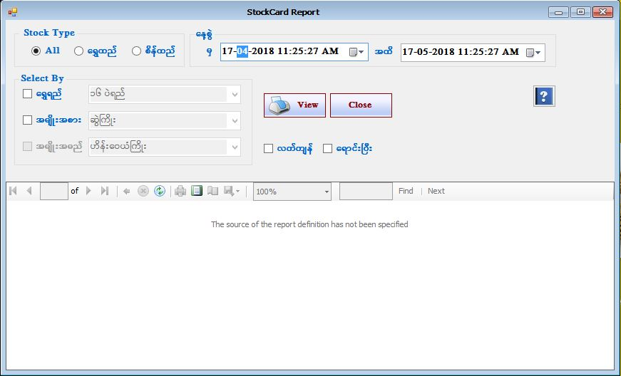

Stock Card Report

- Reports အောက်ရှိ Stock Card Report ကိုဖွင့်ပါ။
- Stock Card Report သည် ဆိုင်ရှိလက်ကျန်နှင့်ရောင်းပြီးပစ္စည်းစာရင်းများ ရွှေရည်၊ အမျိုးအစား၊ အမျိုးအမည် အလိုက်ကိုပြန်လည်ကြည့်ရှူသောနေ့စွဲကို ရွေး၍ ကြည့်နိုင်သော Form ဖြစ်သည်။
- Stock Card Report Form အား အသုံးပြုပြီးပါက Close Button ကိုနှိပ်၍ ပိတ်နိုင်ပါသည်။